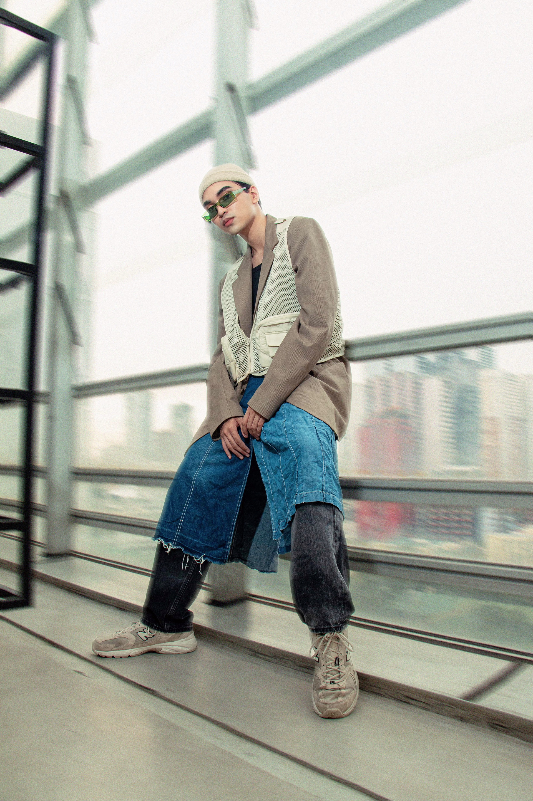

My Portfolio
About Me
I'm Ian Canlubo, a 22-year-old Multimedia Arts student from De La Salle - College of Saint Benilde. I'm at the exciting beginning of my journey as a multimedia artist, eagerly building my portfolio in the captivating realms of multimedia, especially motion graphics and videography. Each project I take on is a creative endeavor and a chance to learn and grow. I'm here to share my early artistic adventures with you and invite you to witness my progress as I develop my skills and craft.